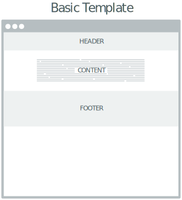
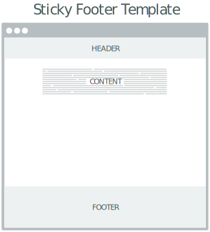

Getting Started
UA Bootstrap is the University of Arizona's flavor of Bootstrap (aka "Twitter Bootstrap"), a popular HTML, CSS, and JS framework for developing responsive, mobile first projects on the web.
The UA Bootstrap CSS code is hosted from a central University of Arizona repository. Source code can be found on BitBucket. Any issues or questions about the University of Arizona flavor of Bootstrap can be submitted through BitBucket or by emailing brand@email.arizona.edu.
Before using UA Bootstrap, please complete the font license agreement form. Important
UA Bootstrap Reference Links
Use these reference links to start your project. Pay attention to the appended version name ("version"). When new versions are released, accompanying documentation for new or updated items will include a New or Updated label.
<!-- Latest icon font stylesheet -->
<link rel="stylesheet" href="https://cdn.uadigital.arizona.edu/lib/ua-brand-icons/v1.1.0/ua-brand-icons.min.css">
<!-- Compiled and minified UA Bootstrap CSS, icon font not included -->
<link rel="stylesheet" href="https://cdn.uadigital.arizona.edu/lib/ua-bootstrap/v1.0.0-beta.26/ua-bootstrap.min.css">
<!-- jQuery -->
<script src="https://code.jquery.com/jquery-2.2.4.min.js"></script>
<!-- Latest compiled and minified JavaScript -->
<script src="https://cdn.uadigital.arizona.edu/lib/ua-bootstrap/v1.0.0-beta.26/ua-bootstrap.min.js"></script>
HTML5 doctype
UA Bootstrap utilizes certain HTML elements and CSS properties that require the use of the HTML5 doctype. Include it at the beginning of all of your projects.
<!DOCTYPE html>
<html lang="en">
...
</html>
Mobile First
You can disable zooming capabilities on mobile devices by adding
user-scalable=no to the viewport meta tag. This disables zooming—meaning users
are only able to scroll—and results in your site feeling a bit more like
a native application. Overall, we don't recommend this on every site, so use
caution!
<meta name="viewport" content="width=device-width, initial-scale=1,
maximum-scale=1, user-scalable=no">
To ensure proper rendering and touch zooming, add the viewport meta tag to your
<head>
<meta name="viewport" content="width=device-width, initial-scale=1,
maximum-scale=1, user-scalable=yes">
Basic Template
Start with this basic HTML template, which has been customized for the UA brand. Copy the HTML below to begin working with a minimal Bootstrap document.
<!DOCTYPE html>
<html lang="en" class="external-links ua-brand-icons">
<head>
<meta charset="utf-8">
<meta http-equiv="X-UA-Compatible" content="IE=edge">
<meta name="viewport" content="width=device-width, initial-scale=1">
<title>Bootstrap 101 Template</title>
<!-- Latest icon font stylesheet -->
<link rel="stylesheet" href="https://cdn.uadigital.arizona.edu/lib/ua-brand-icons/v1.1.0/ua-brand-icons.min.css">
<!-- Compiled and minified UA Bootstrap CSS, icon font not included -->
<link rel="stylesheet" href="https://cdn.uadigital.arizona.edu/lib/ua-bootstrap/v1.0.0-beta.26/ua-bootstrap.min.css">
</head>
<body>
<h1>Hello, world!</h1>
<!-- jQuery -->
<script src="https://code.jquery.com/jquery-2.2.4.min.js"></script>
<!-- Latest compiled and minified JavaScript -->
<script src="https://cdn.uadigital.arizona.edu/lib/ua-bootstrap/v1.0.0-beta.26/ua-bootstrap.min.js"></script>
</body>
</html>
Sticky Footer Template
The following template adds a technique to push the footer to the bottom of the
page without having to set a footer height.
This solves for the issue depicted in the image below using
the flex value for the display property, with a flex-direction of column.
To add padding around the page rows you can add .page-row-padding-top and .page-row-padding-bottom.
Compatibility Information
UA Bootstrap's default sticky footer implementation uses the CSS Flexible Box layout module (flexbox) and is incompatible with older versions of Microsoft Internet Explorer (versions older than IE10). In order for sticky footers to work correctly in older versions of IE, the following line needs to be included at the top of all HTML files.<!--[if lte IE 9]><html class="lte-ie9 sticky-footer"><![endif]-->

<!DOCTYPE html>
<!--[if lte IE 9]><html lang="en" dir="ltr" class="lte-ie9 external-links ua-brand-icons sticky-footer"><![endif]-->
<!--[if (gt IE 9)|(gt IEMobile 7)]><!--><html lang="en" dir="ltr" class="external-links ua-brand-icons sticky-footer"><!--<![endif]-->
<html lang="en" class="external-links ua-brand-icons sticky-footer">
<head>
<meta charset="utf-8">
<meta http-equiv="X-UA-Compatible" content="IE=edge">
<meta name="viewport" content="width=device-width, initial-scale=1">
<title>Bootstrap 101 Template</title>
<!-- Latest icon font stylesheet -->
<link rel="stylesheet" href="https://cdn.uadigital.arizona.edu/lib/ua-brand-icons/v1.1.0/ua-brand-icons.min.css">
<!-- Compiled and minified UA Bootstrap CSS, icon font not included -->
<link rel="stylesheet" href="https://cdn.uadigital.arizona.edu/lib/ua-bootstrap/v1.0.0-beta.26/ua-bootstrap.min.css">
</head>
<body>
<header class="page-row">
This is a header.
</header>
<section id="content" class="page-row page-row-expanded">
<h1>Hello, world!</h1>
</section>
<footer class="page-row">
This is the footer.
</footer>
<!-- jQuery -->
<script src="https://code.jquery.com/jquery-2.2.4.min.js"></script>
<!-- Latest compiled and minified JavaScript -->
<script src="https://cdn.uadigital.arizona.edu/lib/ua-bootstrap/v1.0.0-beta.26/ua-bootstrap.min.js"></script>
</body>
</html>
Want to Contribute?
Any release of UA Bootstrap is tested and ready to use. But improvements to the framework are in everyone's best interest.
A team of web-focused volunteers known as Arizona Digital meets weekly to build and test products like UA Bootstrap and UA Quickstart. We're also working on next generation versions: Arizona Bootstrap (based on Bootstrap 4) and Arizona Quickstart (Drupal 8).
If you want to get involved, you can:
- Request access to join the discussion on Slack
- Participate in Friday meetings and Wednesday pull request review sessions (ask for more details in Slack)
- Submit pull requests on Bitbucket
Questions, bug reports or suggestions can also be emailed to az-digital@web.arizona.edu or (preferably!) reported on Slack.